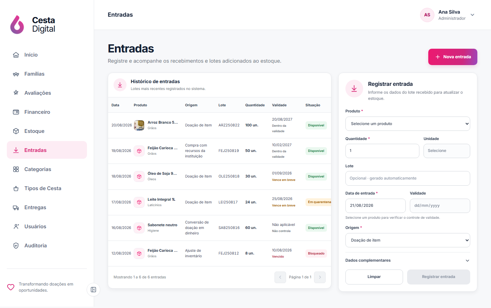
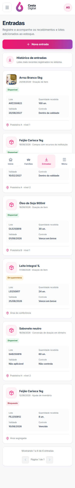
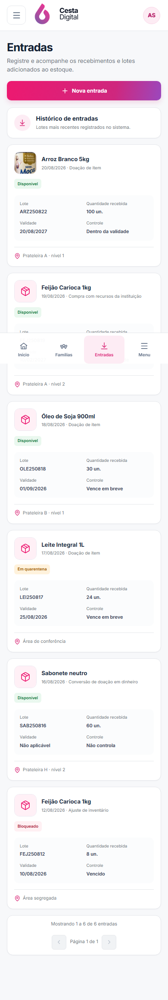
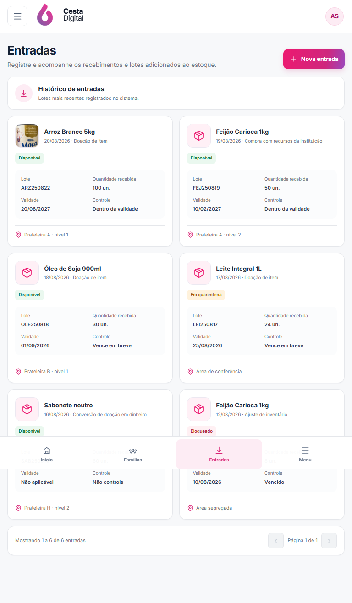
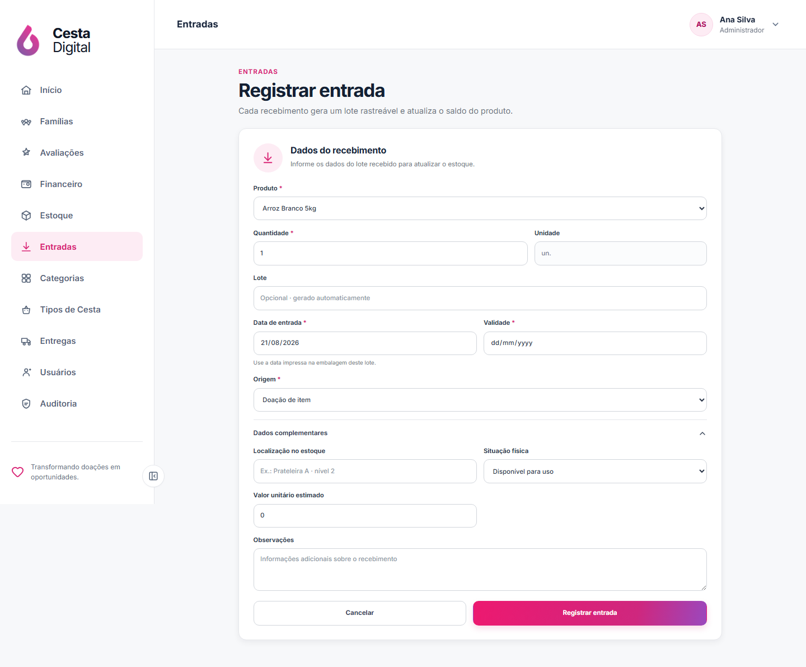
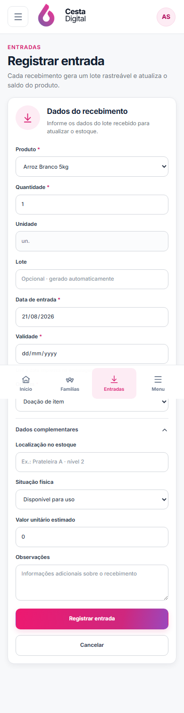

V2-09A · Entradas
Comparação da direção visual com o histórico real de lotes e o fluxo seguro de recebimento.
Aprovado por Gabriel · 21/08/2026Referência × implementação
Clique em qualquer imagem para abrir a captura original em uma nova aba.


Composição responsiva
Desktop mantém histórico e formulário lado a lado; tablet e mobile recebem cartões e cadastro dedicado.



Cadastro de lote
A rota existente foi preservada para acesso direto e para o fluxo iniciado no cadastro do produto.


Fidelidade funcional
Fornecedor e responsável não foram inventados. A tela usa origem, lote, localização, validade e situação fornecidos pela API.
Cada registro continua sendo um lote individual, com quantidade, data de entrada e controle de validade.
O histórico ganhou /stock-batches e o cadastro mantém /stock-batches/new.
A tabela não é comprimida no celular; cartões próprios mantêm leitura e ações seguras.